Thanksgiving & Fall
Pumpkins, apples, harvest, and Thanksgiving – reading and math resources for the fall months.
34 resources
Subject
Grade

Irish Halloween Reading Comprehension Passages | History Scavenger Hunt 3-4

Apple Tree Reading Comprehension Passages | Science Scavenger Hunt 7-8

Fall Farm Safety Reading Comprehension Passages | Health Scavenger Hunt 1-2

Money Reading Comprehension Passages | Economics Scavenger Hunt 3-4

Autumn Leaves Reading Comprehension | Science Scavenger Hunt 3-4

Land Art Reading Comprehension Passages | Visual Arts Scavenger Hunt 3-4

Grain Field Reading Comprehension Passages | Autumn Scavenger Hunt 3-4

Pumpkin Farm Reading Comprehension Passages | Science Scavenger Hunt 3-4

Autumn Forest Reading Comprehension Passages | Science Scavenger Hunt 3-4

Lantern Night Reading Comprehension Passages | Autumn Scavenger Hunt 3-4

Kites & Wind Reading Comprehension Passages | Science Scavenger Hunt 3-4

Apple Cellar Reading Comprehension Passages | Autumn Scavenger Hunt 3-4

Potato Harvest Reading Comprehension Passages | Science Scavenger Hunt 3-4

Fall Reading Comprehension Passages | Leaf Art Scavenger Hunt 1st 2nd Grade

Fall & Winter Reading Comprehension Passages | Trees Science Scavenger Hunt
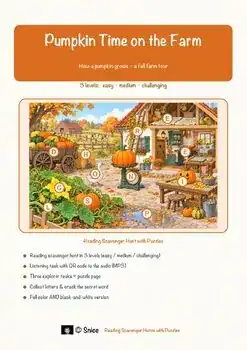
Pumpkin Life Cycle Reading Scavenger Hunt | Fall Science Escape Activity

Fall Animals Worksheets Bundle | Grades 5-8 | How Wildlife Prepares for Winter

Harvest Vegetables Worksheets Bundle | Grades 5-8 | Fall Reading Passages

Halloween Science Worksheets Bundle | Grades 5-8 | Bats, Spiders & Bones

Fall Worksheets Bundle | Grades 5-8 | Autumn Trees & Animals Reading Passages
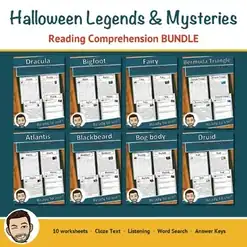
Halloween Worksheets Bundle | Grades 5-8 | Spooky Legends Reading Comprehension
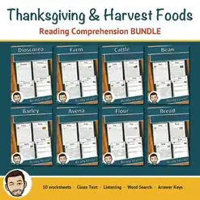
Thanksgiving Worksheets Bundle | Grades 5-8 | Harvest Reading Comprehension

FREE Fall Reading Comprehension Passages – Halloween, Autumn & Harvest | Cloze

Holidays Around the World Reading Comprehension BUNDLE | Fall & Winter
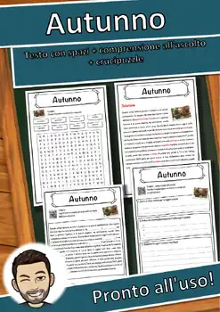
Autunno – Italian Reading: Cloze Text, Listening Task & Word Search (Scheda)
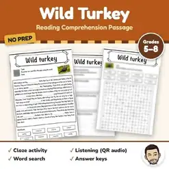
Wild Turkey Reading Comprehension Passage | Thanksgiving Word Search Grades 5-8
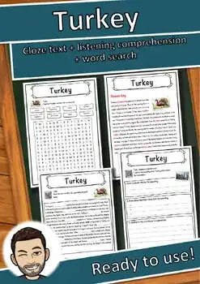
Turkey – Reading Comprehension: Cloze Text, Listening Task & Word Search
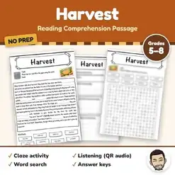
Harvest Reading Comprehension Passage | Fall Word Search Grades 5-8
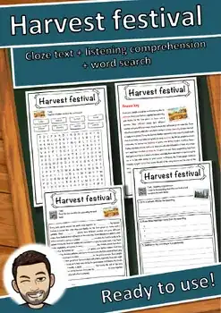
Harvest Festival Reading Comprehension Passage | Thanksgiving Grades 5-8
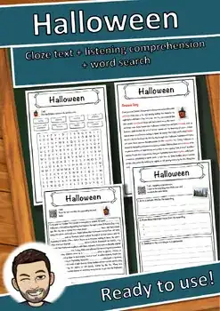
Halloween – Reading Comprehension: Cloze Text, Listening Task & Word Search
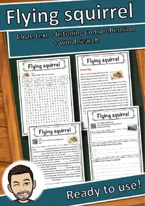
Flying squirrel – Reading Comprehension: Cloze, Listening & Word Search
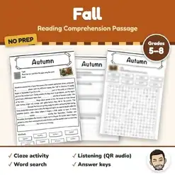
Fall Reading Comprehension Passage & Questions | Autumn Word Search Grades 5-8

3D Fall Ornament Craft Templates & Activities | Grades 3–4
Decorazione 3D d'autunno | Lavoretto, sagome e attività | Classi 3ª-4ª
Decorazione 3D d'autunno | Lavoretto, sagome e attività | Classi 3ª-4ª
No resources found – try a different search term or filter.